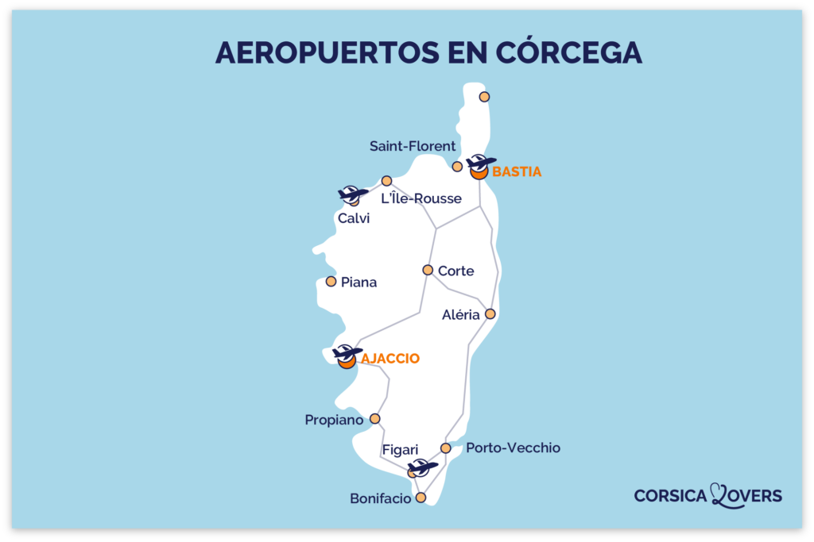
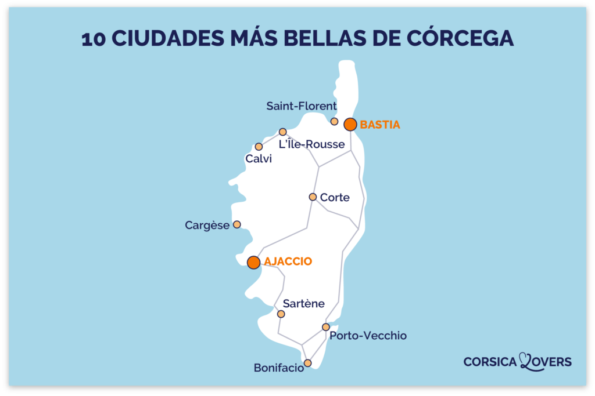
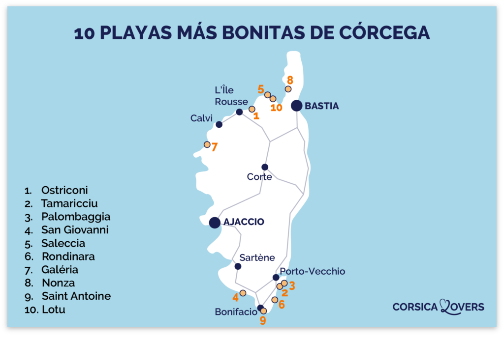
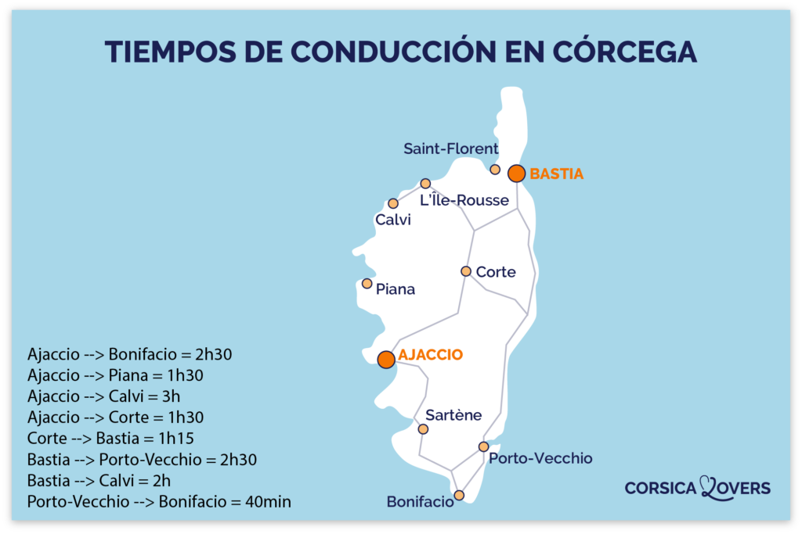
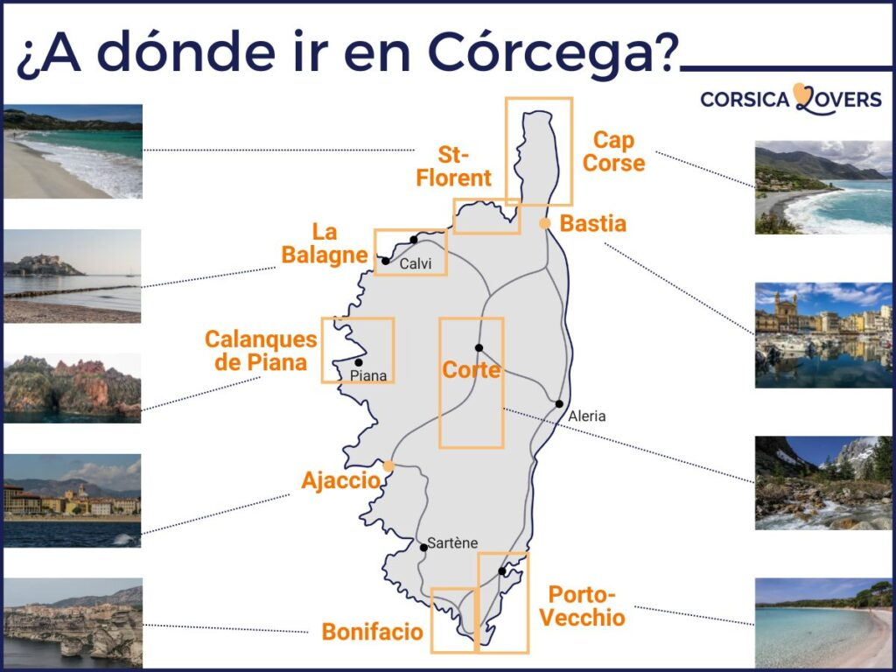

<!DOCTYPE html>
<html lang="es"></html>
<head>
    <title>Corcega Experience</title>
    <meta charset="UTF-8">
    <meta name="viewport" content="width=device-width, initial-scale=1.0">
    <script src="../jquery.min.js"></script>
    <link rel="stylesheet" type="text/css" href="../styles2.css">
    <script type="text/javascript" src="../funciones.js"></script>
    <link rel="icon" type="image/x-icon" href="../Imagenes/OIG.jpeg">
    <style>
 
        img {
            width: 100%;
            height: auto;
        }

        #prevBtn, #nextBtn {
            margin-top: 10px;
            padding: 10px 20px;
            background-color: #3498db;
            color: #ffffff;
            border: none;
            border-radius: 5px;
            cursor: pointer;
            font-size: 16px;
        }

        #prevBtn, #nextBtn:hover {
            background-color: #2980b9;
        }

    </style>
    <script>
        document.addEventListener('DOMContentLoaded', function () {
        let currentSlide = 0;
        const slides = document.querySelectorAll('.slide');

        function showSlide(index) {
            slides.forEach((slide, i) => {
                slide.style.display = i === index ? 'block' : 'none';
            });
        }

        function nextSlide() {
            currentSlide = (currentSlide + 1) % slides.length;
            showSlide(currentSlide);
        }

        function prevSlide() {
            currentSlide = (currentSlide - 1 + slides.length) % slides.length;
            showSlide(currentSlide);
        }

        // Mostrar el primer slide al cargar la página
        showSlide(currentSlide);

        // Agregar eventos para navegar entre slides
        document.getElementById('nextBtn').addEventListener('click', nextSlide);
        document.getElementById('prevBtn').addEventListener('click', prevSlide);

        // Cambiar de slide cada 3 segundos (ajusta el tiempo según tus necesidades)
        setInterval(nextSlide, 10000);
        });

    </script>
</head>
<body>
    <div id="contenedor">
        <div id="barra"> 
            <button id="botonDesplegar">  </button>
            <div class="barra-lateral" id="miBarra">
                <ul>
                    <li><a href="../index.html">Inicio</a></li>
                    <li><a href="quienessomos.html">Quienes Somos</a></li>
                    <li><a href="planes.html">Nuestros Planes</a></li>
                    <li><a href="corcega.html">Corcega</a></li>
                    <li><a href="experiencia.html">Como es la experiencia</a></li>
                    <li><a href="ustedes.html">Ustedes</a></li>
                    <li><a href="ayuda.html">Ayuda</a></li>
                </ul>   
                <p id="nombre2">Corcega Experience TM</p>
            </div>
        </div>

        <div id="contenido">
            <h1>Y estos son los mapas de la isla con los puntos de interes:</h1>
            <h2>La experiencia esta ligada a los siguientes mapas...</h2>

            <div class="slider-container">
                <div class="slide">
                    
                </div>

                <div class="slide">
                    
                </div>    

                <div class="slide">
                    
                </div>

                <div class="slide">
                    
                </div>

                <div class="slide">
                    
                </div>
                
                <button id="prevBtn">Previous</button>
                <button id="nextBtn">Next</button>
            </div>
        
        </div>    
    </div>   

    <div class="barrita"></div>

    <footer class="footer">
        <ul>
            <li><a href="">redes</a></li>
            <li>Corcega Experience TM</li>
            <li>Derechos resrvados Fausto Bilo IND.</li>
        </ul>
    </footer>  

          
</body>
</html>
